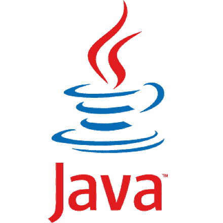

Cristian Camilo Carvajal Silva
Tecnólogo de Sistemas de Información
Institución universitaria ITM
Medellín, Ant., Colombia
Sobre mí
Me caracterizo por ser una persona muy activa, con mucha disposición al aprendizaje, un alto grado de análisis, excelentes relaciones interpersonales y trabajo en equipo; soy orientado a la observación, busco los recursos más eficientes para dar solución a los problemas, tomando decisiones oportunas en pro de los logros de la organización.
Experiencia
- Web Developer
- Talent.com
- Febrero 2019 - Actualidad
- Desarrollador Javascript
- Neuvoo.com
- Agosto 2018 - Enero 2019
Formación académica
Profesional
- Ingeniería de sistemas de información
- Institución universitaria ITM
- 2021 - Actualidad
- Tecnología de sistemas de información
- Institución universitaria ITM
- 2015 - 2019
Cursos
- Herramientas para innovar
- Institución universitaria ITM
- Septiembre 2021
- Git going fast: One hour git crash course
- Udemy
- Enero 2021
- Fundamentos de la gestión del tiempo
- Linkedin learning
- Diciembre 2020
- Fundamentos de android
- Coursera
- Agosto 2020
- Curso de python
- Platzi
- Febrero 2019
- Bases de datos generalidades y sistemas de gestión
- Servicio nacional de aprendizaje SENA
- Marzo 2018
- Desarrollo de apps moviles (App inventor)
- Fundacion Marina Orth
- Marzo 2017
- Variables y estructuras de control en la programación orientada a objetos
- Servicio nacional de aprendizaje SENA
- Octubre 2016
- Curso de programación de apps moviles
- Universidad complutense de Madrid
- Junio 2016
- Procesos para software de calidad
- Servicio nacional de aprendizaje SENA
- Enero 2016
- Metodologia de la programación de sistemas informáticos
- Servicio nacional de aprendizaje SENA
- Noviembre 2015
Tecnologías
